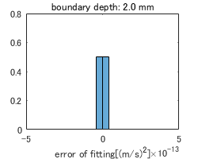
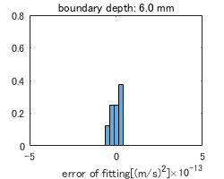

Contents
%%%%%%%%%%%%%%%%%%%% % 対象：ワイヤターゲット，境界厚さ：2mm~19mm % 設定音速：1580[m/s]＝正解音速 % 焦点水平位置固定：y=0 % 境界位置：既知 % IMCL割合を0 %に固定する． % 波面遅延プロファイルにより音速推定 % 素子間受信波時間差は実信号の正規化相互相関を用いる %%%%%%%%%%%%%%%%%%%%
初期設定（共通）
clear dst_path = sprintf('H:/result/2018_12_06_IMCL_direct_estimation/2layer'); load("H:/data/kwave/config/t_pos_2board.mat"); load("H:/data/kwave/medium/2018_11_07_layer_medium/Layer_medium_boundary_2.0mm_ IMCL0%.mat") load("H:/data/kwave/result/2018_11_07_layer_medium/Layer_medium_boundary_2.0mm_ IMCL0%/rfdata.mat") load("H:/data/kwave/result/2018_11_07_layer_medium/Layer_medium_boundary_2.0mm_ IMCL0%/kgrid.mat") v_fat = 1450;%[m/s] v_muscle = 1580;%[m/s] v_reference = v_muscle; t_facing_distance = 0.04;%[m] [~,num_receiver,num_transmitter] = size(rfdata); num_echo_receiver = num_transmitter; num_medium = length(ind_focal_point); reference_point = zeros(1,num_echo_receiver); reference_point_lowerlimit = zeros(1,num_echo_receiver);%均質性評価のためのRFデータマスキングに使う reference_point_upperlimit = zeros(1,num_echo_receiver);%均質性評価のためのRFデータマスキングに使う distance_from_focal_point_all = zeros(1,num_echo_receiver); delay_time_all = zeros(1,num_echo_receiver); num_depth = (t_pos(2,1)-t_pos(2,101))/kgrid.dx/2 - 3;%'3'とあるのは，最近接距離が0.4 mmであることを考慮している． focal_point = zeros(2,num_medium); focal_point(2,:) = kgrid.x_vec(ind_focal_point); focal_depth = 20*1e-3 - focal_point(2,:); element_pitch = abs(t_pos(1,1) - t_pos(1,2)); lateral_range_max = 0; lateral_range_min = 0; num_lateral = round((lateral_range_max -lateral_range_min) / element_pitch)+1;%0.0~4.8 mmまで ind_max_signal = 0; max_signal = 0; displacement = zeros(num_echo_receiver,num_medium); displacement_ref = zeros(num_echo_receiver,num_medium); error_wavefront = zeros(1,num_medium); estimated_velocity = zeros(1,num_medium); correct_velocity = v_muscle*ones(1,num_medium); aberration_error = zeros(num_echo_receiver,num_medium); aberration_ave_error = zeros(1,num_medium);
媒質の選択
for mm = 1:num_medium
loadpath = sprintf('H:/data/kwave/result/2018_11_07_layer_medium/Layer_medium_boundary_%0.1fmm_ IMCL0%%/',focal_depth(mm)*1e3); load([loadpath,'\rfdata.mat']) load([loadpath,'\kgrid.mat']) load([loadpath,'\sourse_wave.mat']) [num_sample,~,~] = size(rfdata);
フォーカシング
%駆動素子の決定 target_element = find((-focal_depth(mm)/2<=t_pos(1,1:100)&(t_pos(1,1:100)<=focal_depth(mm)/2))); %受信用の参照点算出 for jj = 1:num_echo_receiver distance_from_focal_point_all(1,jj) = norm(t_pos(:,jj) - focal_point(:,mm)); delay_time_all(1,jj) = floor(((distance_from_focal_point_all(1,jj) - focal_depth(mm))/v_reference)/kgrid.dt);%[sample] reference_point(1,jj) = floor(delay_time_all(1,jj)+(2*focal_depth(mm)/v_reference)/kgrid.dt+25-1); end %送信ビームフォーミング（共通） focused_rfdata = transmit_focus(rfdata,target_element,num_sample,delay_time_all,num_echo_receiver); %受信ビームフォーカシング focal_signal_total = receive_focus(focused_rfdata,target_element,reference_point); interp_rfdata = zeros(num_sample*4,num_echo_receiver); for jj = 1:num_echo_receiver interp_rfdata(:,jj) = interp(focused_rfdata(:,jj),4); end source_wave = interp(source_wave,4);
音速推定
RFデータマスキング(計算領域)
min_mask = (min(reference_point) - 10)*4;
max_mask = (min(reference_point) + 100 - 1)*4;
mask_rfdata = zeros(size(interp_rfdata));
mask_rfdata(min_mask:max_mask,:) = 1;
focused_rfdata_mask = mask_rfdata .* interp_rfdata;
min_reference = (min(reference_point) - 30)*4;
max_reference = (min(reference_point) + 500 - 1)*4;
reference_rfdata = zeros(size(interp_rfdata));
reference_rfdata(min_reference:max_reference,:) = 1;
focused_rfdata_reference = reference_rfdata .* interp_rfdata;
% 波面形状推定
delay_profile = zeros(1,length(target_element));
for jj = 1:length(target_element)-1
[acor,lag] = xcorr(focused_rfdata_mask(:,target_element(jj+1)),focused_rfdata_reference(:,target_element(jj)),'coeff');
[~,I] = max(abs(acor));
displacement(1,target_element(jj)+1) = lag(I);
delay_profile(1,jj+1) = sum(displacement(1,target_element(1):target_element(jj)+1));
end
ind_central_element = find(target_element == 50);
delay_profile = delay_profile + abs(delay_profile(1,ind_central_element));
[~,delay_offset] = findpeaks(abs(hilbert(focused_rfdata_mask(:,50))),'NPeaks',1,'SortStr','descend');
[~,source_wave_offset] = findpeaks(abs(hilbert(source_wave)),'NPeaks',1,'SortStr','descend');
delay_offset = delay_offset - source_wave_offset;
delay_profile = delay_profile + delay_offset/2;
poly_delay_profile_fitted = polyfit(t_pos(1,target_element),(delay_profile*kgrid.dt/4).^2,2);
displacement_ref(1,target_element(2:end)) = diff(reference_point(target_element));
estimated_velocity(mm) = 1/sqrt(poly_delay_profile_fitted(1));
f = polyval(poly_delay_profile_fitted.',t_pos(1,target_element).');
T = table(t_pos(1,target_element).',(delay_profile*kgrid.dt/4).^2.',f,(delay_profile*kgrid.dt/4).^2.'-f,'VariableNames',{'X','Y','Fit','FitError'});
aberration_error(target_element,mm) = T.FitError;
aberration_ave_error(1,mm) = sum(abs(T.FitError))/length(target_element);
保存部
delay_profile = zeros(1,length(target_element));
for jj = 1:length(target_element)-1
[acor,lag] = xcorr(focused_rfdata_mask(:,target_element(jj+1)),focused_rfdata_reference(:,target_element(jj)),'coeff');
[~,I] = max(abs(acor));
displacement(1,target_element(jj)+1) = lag(I);
delay_profile(1,jj+1) = sum(displacement(1,target_element(1):target_element(jj)+1));
end
delay_profile = delay_profile + abs(delay_profile(1,ind_central_element));
[~,delay_offset] = findpeaks(abs(hilbert(focused_rfdata_mask(:,50))),'NPeaks',1,'SortStr','descend');
[~,source_wave_offset] = findpeaks(abs(hilbert(source_wave)),'NPeaks',1,'SortStr','descend');
delay_profile = delay_profile + delay_offset;
figure;
imagesc(t_pos(1,:)*1e3,kgrid.t_array*1e9,abs(hilbert(interp_rfdata)));
hold on
scatter(t_pos(1,(min(target_element):max(target_element)))*1e3,delay_profile*kgrid.dt/4*1e9,'blue','filled');
plot(t_pos(1,(min(target_element):max(target_element)))*1e3,sqrt(f),'red');
hold off
xlabel('lateral[mm]');
ylabel('time[ns]');
axis square;
axis tight;
xlim([t_pos(1,(min(target_element))-1)*1e3 t_pos(1,(max(target_element)+1))*1e3])
ylim([min_reference*kgrid.dt*1e9/4 max_mask*kgrid.dt*1e9/4])
colormap(bone);
colorbar;
caxis([0 max(max(abs(hilbert(focused_rfdata_mask))))])
savefilename = sprintf('/rfdata_detail_interp_rawsignal_%0.1fmm',focal_depth(mm)*1e3);
savefig([dst_path,savefilename,'.fig'])
exportfig([dst_path,savefilename],'png',[400,400])
figure;
imagesc(t_pos(1,:)*1e3,kgrid.t_array*1e9,abs(hilbert(interp_rfdata)));
hold on
scatter(t_pos(1,(min(target_element):max(target_element)))*1e3,delay_profile*kgrid.dt/4*1e9,'blue','filled');
% scatter(t_pos(1,(min(target_element):max(target_element)))*1e3,(reference_point(1,(min(target_element):max(target_element)))+3)*kgrid.dt*1e9,'red');
hold off
xlabel('lateral[mm]');
ylabel('time[ns]');
axis square;
axis tight;
xlim([t_pos(1,(min(target_element))-1)*1e3 t_pos(1,(max(target_element)+1))*1e3])
ylim([0 max_mask*kgrid.dt*1e9/2])
colormap(bone);
colorbar;
caxis([0 max(max(abs(hilbert(focused_rfdata_mask))))])
savefilename = sprintf('/rfdata_whole_interp_rawsignal_%0.1fmm',focal_depth(mm)*1e3);
savefig([dst_path,savefilename,'.fig'])
exportfig([dst_path,savefilename],'png',[400,400])
figure;
histogram(aberration_error(target_element,mm),'Normalization','probability','NumBins',round(sqrt(length(target_element))));
xlim([-5*1e-13 5*1e-13])
ylim([0 0.8])
xlabel('error of fitting[(m/s)^2]');
titlename = sprintf('boundary depth: %0.1f mm',focal_depth(mm)*1e3);
title(titlename);
savefilename = sprintf('/aberration_interp_rawsignal_%0.1fmm',focal_depth(mm)*1e3);
savefig([dst_path,savefilename,'.fig'])
exportfig([dst_path,savefilename],'png',[250,200])
  


end figure; plot(focal_depth*1e3,estimated_velocity); hold on plot(focal_depth*1e3,correct_velocity,'--') hold off xlabel('boundary depth[mm]') ylabel('estimated velocity'); legend('estimated','correct') savefilename = sprintf('/estimation_velociry'); savefig([dst_path,savefilename,'.fig']) exportfig([dst_path,savefilename],'png',[600,500]) figure; plot(focal_depth*1e3,sqrt(aberration_ave_error)*1e9); xlabel('boundary depth[mm]'); ylabel('RMS error[ns]'); savefilename = sprintf('/ave_aberration_interp_rawsignal'); savefig([dst_path,savefilename,'.fig']) exportfig([dst_path,savefilename],'png',[300,250]) save([dst_path,'\2018_12_07_multi_layer_variable']);